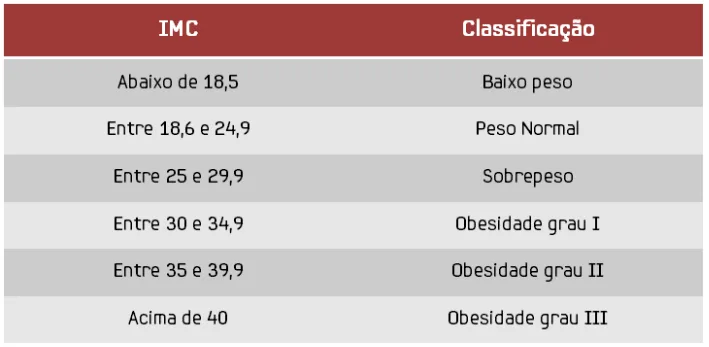

Descubra seu Indíce de Masssa Corporal!
O Índice de Massa Corporal (IMC) é calculado dividindo o peso da pessoa pela sua altura ao quadrado.
Exemplo de cálculo:
Peso: 60 kg
Altura: 1,70 m
IMC = 60 / (1,70 x 1,70)
IMC = 20,76

Uma observação importante para o projeto: As classificações apresentadas são referências para adultos. Em adolescentes, a avaliação do IMC também considera a idade e o sexo, por isso os resultados devem ser interpretados de forma diferente.